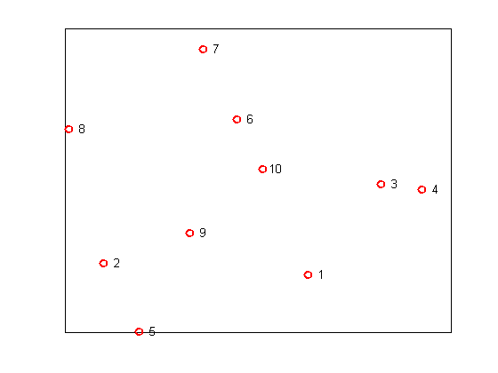
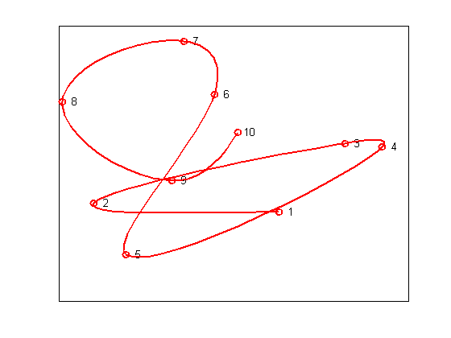
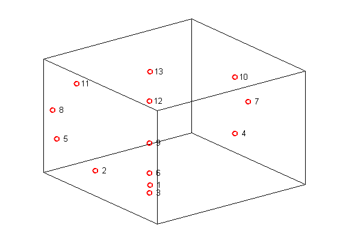
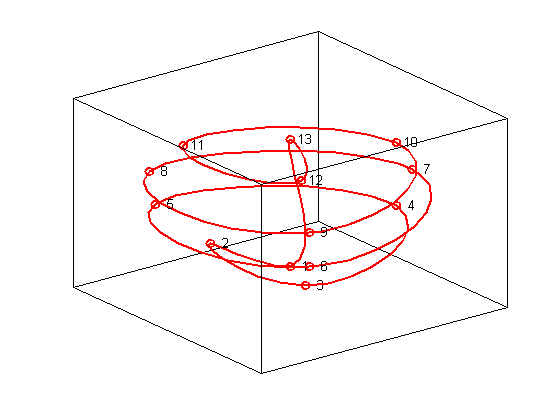

Spline curves
Demonstrating the use of CSCVN.
Copyright 1987-2003 C. de Boor and The MathWorks, Inc. $Revision: 1.16 $
Overview
The spline toolbox will draw a smooth curve through a list of points, in the order in which they are received. You could use the Spline Toolbox command GETCURVE if you wanted the input such a list of points interactively. Here, we select random points, storing them in the array XY, one point per c o l u m n .
npts = 10; xy = [randn(1,npts); randn(1,npts)]; plot(xy(1,:),xy(2,:),'ro','LineWidth',2); text(xy(1,:), xy(2,:),[repmat(' ',npts,1), num2str([1:npts]')]) set(gca,'XTick',[],'YTick',[])
The curve is constructed by
>> cv = cscvn(xy);
and plotted by
>> fnplt(cv,'r',2)
hold on
fnplt(cscvn(xy),'r',2)
hold offNotice that it's just as easy to create spline curves in three dimensions. This time, we'll do something less random. First, we generate the points:
npts = 13; t = linspace(0,8*pi,npts); z = linspace(-1,1,npts); omz = sqrt(1-z.^2); xyz = [cos(t).*omz; sin(t).*omz; z]; plot3(xyz(1,:),xyz(2,:),xyz(3,:),'ro','LineWidth',2); text(xyz(1,:),xyz(2,:),xyz(3,:),[repmat(' ',npts,1), num2str([1:npts]')]) set(gca,'XTick',[],'YTick',[],'ZTick',[]) box on
Here is the 3D spline curve through these points provided by CSCVN. By appending the first point to the end of the list, we get a smooth c l o s e d curve.
hold on fnplt(cscvn(xyz(:,[1:end 1])),'r',2) hold off % axis vis3d